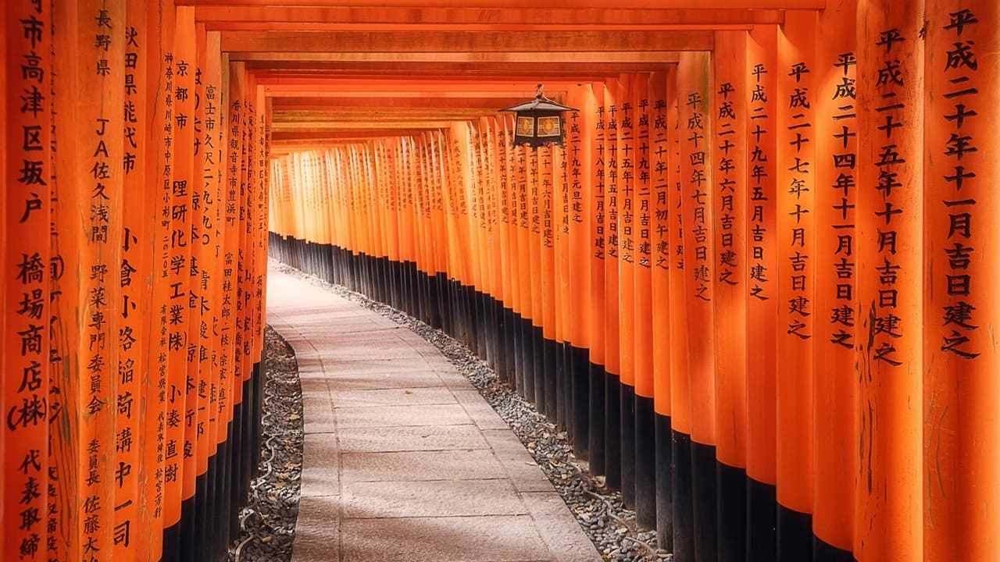

Bienvenidos a "El Sueño Japonés ღ", tu ventana a un mundo donde la armonía entre tradición y tecnología redefine lo que significa prosperidad y calidad de vida. Mientras algunos todavía se aferran al mito del "Sueño Americano", sumido en la incertidumbre y la inseguridad, nosotros te invitamos a descubrir por qué el verdadero sueño se encuentra al otro lado del Pacífico.
Bienvenidos a "El Sueño Japonés ღ", tu ventana a un mundo donde la armonía entre tradición y tecnología redefine lo que significa prosperidad y calidad de vida. Mientras algunos todavía se aferran al mito del "Sueño Americano", sumido en la incertidumbre y la inseguridad, nosotros te invitamos a descubrir por qué el verdadero sueño se encuentra al otro lado del Pacífico.
Mientras el sueño americano se desvanece entre sombras de desigualdad y desconfianza, Japón se erige como un faro de cultura, tecnología y respeto. Sumérgete en un viaje donde la tradición se fusiona con la innovación, y donde la seguridad y la serenidad son el telón de fondo de una sociedad en constante evolución.
 Es hora de dejar atrás los estereotipos y explorar un nuevo sueño, uno donde la etiqueta "Made in Japan" va más allá de la calidad de los productos y se convierte en un testimonio de una forma de vida equilibrada y llena de posibilidades. ¡Acompáñanos en este viaje hacia el auténtico "Sueño Japonés"! Ver Introducción
- En "El Sueño Japonés ღ", te invitamos a descubrir por qué Japón, con su ubicación privilegiada, se destaca como un faro de inspiración y resiliencia en un mundo en constante cambio. Ver Ubicación
- Conoce a los héroes y heroínas que han moldeado el destino de Japón a lo largo de los siglos. Desde valientes samuráis hasta líderes visionarios, exploraremos las vidas y legados de aquellos que han dejado una marca indeleble en la historia japonesa. Ver Personajes
- Adéntrate en la belleza del idioma japonés, una herramienta que abre las puertas a la comprensión más profunda de la cultura. Ver Actividades
- Sumérgete en las páginas de la historia japonesa, desde sus mitos ancestrales hasta los períodos que han dejado una huella indeleble en su identidad. Descubre cómo Japón ha superado desafíos y evolucionado a lo largo del tiempo, creando una narrativa única y cautivadora. Ver Historia